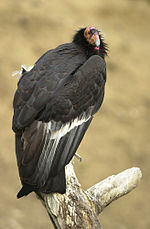
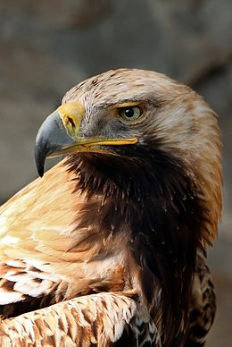
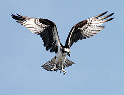
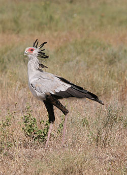
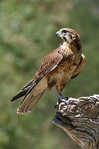
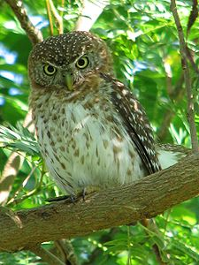
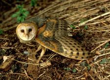

FALCONIFORMES
|
|  |
CATÁRTIDOS |
| Los catártidos (Cathartidae, que proviene del vocablo griego kathartes, que significa “los que limpian”) son una familia de aves del orden Accipitriformes conocidas vulgarmente como buitres americanos o buitres del Nuevo Mundo. Incluye siete especies que se encuentran distribuidas por casi toda América. Se alimentan de carroña, a veces de vegetales y de pequeños animales vivos. No están directamente emparentados con los buitres del Viejo Mundo, también carroñeros, aunque se parecen mucho debido a la evolución convergente. Los urubús, auras o zopilotes, nombres comunes del género Cathartes figuran entre las muy pocas aves con un buen sentido del olfato. |
|  |
ACCIPÍTRIDOS |
| Los accipítridos (Accipitridae) son un clado de aves rapaces diurnas, con categoría taxonómica de familia, de distribución cosmopolita (aunque el grueso de las especies habitan en el Neotrópico) compuesto por más de 200 especies.1 Se caracterizan por poseer un pico ganchudo, grande y fuerte, el cual utilizan para desgarrar la carne de sus presas o bien de carroña. Presentan, a su vez, patas y garras fuertes a lo que se suma un excelente sentido de la visión, lo que les permite localizar presas potenciales a gran distancia.
|
|  |
PANDIÓNIDOS |
| Pandion es un género de aves accipitriformes de la familia Pandionidae distribuido por todo el mundo. El género Pandion es el único de la familia Pandionidae y fue descrito por el zoólogo francés Marie Jules César Savigny en 1809, tomando el nombre de un mítico rey griego, Pandíon |
|  |
SAGITÁRIDOS |
| El secretario (Sagittarius serpentarius) es una especie de ave accipitriforme de la familia Sagittariidae, la única de su familia (Sagittariidae) y de su género (Sagittarius).3 No se reconocen subespecies.3 El nombre le viene por su peculiar librea, gris y con las patas negras, y con un copete de plumas como llevaban los secretarios británicos de hace siglos. También se piensa que es una mala traducción francesa de su nombre árabe saqr-et-tair (ave cazadora). |
|  |
FALCÓNIDOS |
| Los falcónidos (Falconidae) son una familia de aves falconiformes. Incluye aproximadamente 60 especies, como los halcones, cernícalos o alcotanes. A diferencia de los Accipitriformes, además de las garras usan el pico para matar a sus presas, para lo que disponen de una protuberancia córnea en el pico superior, cerca de la comisura, conocida como “diente de halcón”. |
ESTRIGIFORMES
|
|  |
ESTRÍGIDOS |
| Los estrígidos (Strigidae) son uno de los dos clados de rapaces nocturnas del grupo Strigiformes, el cual incluye los búhos, mochuelos, autillos, cárabos, caburés, tecolotes, etc. Son aves adaptadas a la noche, aunque no tanto como las lechuzas de la familia Tytonidae. Se alimentan generalmente de invertebrados y de pequeños vertebrados. Tienen hábitos nocturnos, pero algunas especies, como Glaucidium brasilianum, cazan también durante el día. El clado está compuesto por casi doscientas especies. |
|  |
TITÓNIDOS |
| Los titónidos (Tytonidae) son una de las dos familias de aves en que se divide el orden Strigiformes; la otra es Strigidae. Las especies de esta familia, que reciben el nombre genérico de lechuzas, son de tamaño mediano a grande con la cabeza ancha en forma de corazón. Los titónidos incluyen dos sub-familias: Tytoninae y Phodilinae, ambas con un solo género cada una. |
|